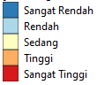

<!DOCTYPE html>
<html lang="en">
  <head>
    <!-- Membantu browser dalam mengidentifikasi aplikasi support dengan mobile device -->
    <meta charset="utf-8">
    <meta name="viewport" content="initial-scale=1,user-scalable=no,maximum-scale=1,width=device-width">
    <meta name="mobile-web-app-capable" content="yes">
    <meta name="apple-mobile-web-app-capable" content="yes">

    <!-- Judul pada tab browser -->
    <title>WebGIS</title>

    <!-- Leaflet CSS Library -->
    <link rel="stylesheet" href="http://unpkg.com/leaflet@1.0.2/dist/leaflet.css"/>
    <!-- Leaflet JavaScript Library -->
    <script src="http://unpkg.com/leaflet@1.0.2/dist/leaflet.js"></script>
<!-- Leaflet CSS Library -->
    <link rel="stylesheet" href="https://unpkg.com/leaflet@1.3.4/dist/leaflet.css">


    <style>
      html, body, #map {
        height: 100%;
        width: 100%;
        margin: 0px;
      }
    </style>


    <style>
     table { /*style untuk tabel*/
      font-family: arial, sans-serif;
      border-collapse: collapse;
    }
    td, th {
      border: 1px solid #dddddd;
      text-align: left;
      padding: 8px;
    }
    tr:nth-child(even) {
      background-color: #B6DBEE; //warna tabel
    }
    </style>

<style> /*untuk Title*/
    .info {
    padding: 6px 8px;
    font: 14px/16px Arial, Helvetica, sans-serif;
    background: white;
    background: rgba(255,255,255,0.8);
    box-shadow: 0 0 15px rgba(0,0,0,0.2);
    border-radius: 5px;
    }
   .info h2 {
    margin: 0 0 5px;
    color: #777;
    }
    </style>

  </head>

  <body>
    <!-- Leaflet Jquery, menarik data jquery GeoJSON-->
    <script src="https://code.jquery.com/jquery-2.1.4.min.js"></script>

    <!-- Leaflet JavaScript Library -->
    <script src="https://unpkg.com/leaflet@1.3.4/dist/leaflet.js"></script>
    <!-- unpkg itu adalah librarynya secara online -->


    <!-- HTML Block untuk menampilkan peta -->
    <div id="map"></div>
      <script>
      /* Initial Map */
      //lat, long, zoom (tampilan awal dapat dicari dari google earth)
      var map = L.map('map').setView([-7.150975,110.140259],8);
              
      /* Tile Basemap */
      var openstreetmap = L.tileLayer('https://{s}.tile.openstreetmap.org/{z}/{x}/{y}.png', {
      maxZoom: 19,
      attribution: '&copy; <a href="http://www.openstreetmap.org/copyright">OpenStreetMap</a>'
        });

      var OpenTopoMap = L.tileLayer('https://{s}.tile.opentopomap.org/{z}/{x}/{y}.png', {
      maxZoom: 17, attribution: 'Map data: &copy; <a href="https://www.openstreetmap.org/copyright">OpenStreetMap</a> contributors, <a href="http://viewfinderpanoramas.org">SRTM</a> | Map style: &copy; <a href="https://opentopomap.org">OpenTopoMap</a> (<a href="https://creativecommons.org/licenses/by-sa/3.0/">CC-BY-SA</a>)'
      });

      var Esri_WorldStreetMap = L.tileLayer('https://server.arcgisonline.com/ArcGIS/rest/services/World_Street_Map/MapServer/tile/{z}/{y}/{x}', {
  attribution: 'Tiles &copy; Esri &mdash; Source: Esri, DeLorme, NAVTEQ, USGS, Intermap, iPC, NRCAN, Esri Japan, METI, Esri China (Hong Kong), Esri (Thailand), TomTom, 2012'
      });

      var CyclOSM = L.tileLayer('https://{s}.tile-cyclosm.openstreetmap.fr/cyclosm/{z}/{x}/{y}.png', {
      maxZoom: 20,
        attribution: '<a href="https://github.com/cyclosm/cyclosm-cartocss-style/releases" title="CyclOSM - Open Bicycle render">CyclOSM</a> | Map data: &copy; <a href="https://www.openstreetmap.org/copyright">OpenStreetMap</a> contributors'
      });

      var Esri_NatGeoWorldMap = L.tileLayer('https://server.arcgisonline.com/ArcGIS/rest/services/NatGeo_World_Map/MapServer/tile/{z}/{y}/{x}', {
          attribution: 'Tiles &copy; Esri &mdash; National Geographic, Esri, DeLorme, NAVTEQ, UNEP-WCMC, USGS, NASA, ESA, METI, NRCAN, GEBCO, NOAA, iPC', maxZoom: 16
      });
      

      var Esri_WorldImagery = L.tileLayer('https://server.arcgisonline.com/ArcGIS/rest/services/World_Imagery/MapServer/tile/{z}/{y}/{x}', {
          attribution: 'Tiles &copy; Esri &mdash; Source: Esri, i-cubed, USDA, USGS, AEX, GeoEye, Getmapping, Aerogrid, IGN, IGP, UPR-EGP, and the GIS User Community'
        });

      var Stadia_AlidadeSmooth = L.tileLayer('https://tiles.stadiamaps.com/tiles/alidade_smooth/{z}/{x}/{y}{r}.png', {
         maxZoom: 20,
           attribution: '&copy; <a href="https://stadiamaps.com/">Stadia Maps</a>, &copy; <a href="https://openmaptiles.org/">OpenMapTiles</a> &copy; <a href="http://openstreetmap.org">OpenStreetMap</a> contributors'
        });

      var Esri_WorldTopoMap = L.tileLayer('https://server.arcgisonline.com/ArcGIS/rest/services/World_Topo_Map/MapServer/tile/{z}/{y}/{x}', {
          attribution: 'Tiles &copy; Esri &mdash; Esri, DeLorme, NAVTEQ, TomTom, Intermap, iPC, USGS, FAO, NPS, NRCAN, GeoBase, Kadaster NL, Ordnance Survey, Esri Japan, METI, Esri China (Hong Kong), and the GIS User Community'
        });

      openstreetmap.addTo(map); //Memanggil basemap untuk ditampilkan ketika halaman dipanggil


/* GeoJSON Polygon */
var adminkabupaten = L.geoJson(null, {
    style: function (feature) {
        if (feature.properties.AngkaPartisipasiSekolah >=51.610 && feature.properties.AngkaPartisipasiSekolah <= 64.716 ) {
          return {
            opacity: 1,
            color: 'black', //warna garis tepi
            weight: 1.0,
            fillOpacity: 0.7,
            fillColor: '#2c7bb6'
          }
        }
        if (feature.properties.AngkaPartisipasiSekolah > 64.716 && feature.properties.AngkaPartisipasiSekolah <= 68.970 ) {
          return {
            opacity: 1,
            color: 'black', //warna garis tepi
            weight: 1.0,
            fillOpacity: 0.7,
            fillColor: '#abd9e9'
          }
        }
        if (feature.properties.AngkaPartisipasiSekolah > 68.970 && feature.properties.AngkaPartisipasiSekolah <= 74.692 ) {
          return {
            opacity: 1,
            color: 'black', //warna garis tepi
            weight: 1.0,
            fillOpacity: 0.7,
            fillColor: '#ffffbf'
          }
        }
        if (feature.properties.AngkaPartisipasiSekolah > 74.692 && feature.properties.AngkaPartisipasiSekolah <= 80.340 ) {
          return {
            opacity: 1,
            color: 'black', //warna garis tepi
            weight: 1.0,
            fillOpacity: 0.7,
            fillColor: '#fdae61'
          }
        }
        if (feature.properties.AngkaPartisipasiSekolah > 80.340 && feature.properties.AngkaPartisipasiSekolah <= 90.790 ) {
          return {
            opacity: 1,
            color: 'black', //warna garis tepi
            weight: 1.0,
            fillOpacity: 0.7,
            fillColor: '#d7191c'
          }
        }
      },

        /* Highlight & Popup */
        onEachFeature: function (feature, layer) {
          var content = "<table>" + 
          "<tr><th><b>Kabupaten</b> </th><td>"+feature.properties.Kabupaten+"</td> </tr>"+
          "<tr><th><b>Nama Bupati</b> </th><td>"+feature.properties.Bupati+"</td> </tr>"+
          "<tr><th><b>Luas Wilayah</b></th><td>"+feature.properties.luas+" hektar"+"</td> </tr>"+
          "<tr><th><b>url</b></th><td>"+"<a href='"+feature.properties.url+"' target='_blank'> kunjungi website </a>"+"</td> </tr>"+
          "<tr><th><b>Logo</b></th><td>"+""+"</td> </tr>"+
          "<tr><td colspan='2'>"+feature.properties.video+"</td> </tr>"+ //jika videonya mau 2 kolom
          // "<tr><th>Video</th><td>"+feature.properties.video+"</td> </tr>"+ //jika videonya mau 1 kolom
          "</table>"

          var tooltipcontent = "Kabupaten/Kota : " + feature.properties.Kabupaten + " <br> " + "Luas Wilayah : " + feature.properties.luas+" hektar";
          layer.on({
            mouseover: function (e) { //Fungsi mouse berada di atas obyek
              var layer = e.target; //variabel layer
              layer.setStyle({ //Highlight style
                weight: 2, //Tebal garis tepi polygon
                color: "#00FFFF", //Warna garis tepi polygon
                opacity: 1, //Transparansi garis tepi polygon
                fillColor: "yellow", //Warna tengah polygon
                fillOpacity: 1, //Transparansi tengah polygon
              });
              adminkabupaten.bindTooltip(tooltipcontent);
            },

            mouseout: function (e) { //Fungsi mouse keluar dari area di atas obyek
              adminkabupaten.resetStyle(e.target); //Mengembalikan style garis ke style awalnya
              // map.closePopup(); //Menutup popup
            },
            
            click: function (e) { //Fungsi ketika obyek di-klik
              adminkabupaten.bindPopup(content); //Popup
            }

                  });

        }
      });
      /* memanggil data geojson polyline */
      $.getJSON("data/jawa tengah1.geojson", function (data) {
        adminkabupaten.addData(data);
        // map.addLayer(adminkabupaten); //adminkabupaten2 ditampilkan ketika halaman dipanggil
      });


var titikkabkota = L.geoJson(null, {
        pointToLayer: function (feature, latlng) {
          return L.marker(latlng, {
            icon: L.icon({
              iconUrl: "assets/map-icon.png", //icon simbol: peletakan gambar
              iconSize: [21, 21], //ukuran icon simbol
              iconAnchor: [12, 24], //penempatan icon simbol
              popupAnchor: [0, -4], //penempatan popup terhadap icon simbol
            })
          });
        },
        
        /* Popup */
        onEachFeature: function (feature, layer) {
          if (feature.properties) {
          var content = "<table>" + 
          "<tr><th><b>Nama Lokasi</b> </th><td>"+feature.properties.Kantor+"</td> </tr>"+
          "<tr><th><b>Nama Bupati</b> </th><td>"+feature.properties.Bupati+"</td> </tr>"+
          "<tr><th><b>Alamat</b></th><td>"+feature.properties.alamat+""+"</td> </tr>"+
          "<tr><th><b>Longitude</b> </th><td>"+feature.properties.longitude+"</td> </tr>"+
          "<tr><th><b>Latitude</b> </th><td>"+feature.properties.latitude+"</td> </tr>"+
          "<tr><th><b>url</b></th><td>"+"<a href='"+feature.properties.url+"' target='_blank'> kunjungi website </a>"+"</td> </tr>"+
          "<tr><th><b>Logo</b></th><td>"+""+"</td> </tr>"+
          "<tr><td colspan='2'>"+feature.properties.video+"</td> </tr>"+ //jika videonya mau 2 kolom
          // "<tr><th>Video</th><td>"+feature.properties.video+"</td> </tr>"+ //jika videonya mau 1 kolom
          "</table>"
              ;
          layer.on({
              click: function (e) { //Fungsi ketika icon simbol di-klik
                titikkabkota.bindPopup(content); //content disini menmanggil content diatasnya, bisa langsung
              }
            });
          }
        }
      });
      /* memanggil data geojson point */
      $.getJSON("data/titik kantor kabupaten jateng.geojson", function (data) {
        titikkabkota.addData(data);
        //map.addLayer(titikkabkota); //titikkabkota ditampilkan ketika halaman dipanggil
      });


/* TITLE/JUDUL */
      var title = new L.Control({position:"topright"});
      /*defaultnya adlaah kanan atas*/
        title.onAdd = function (map) {
        this._div = L.DomUtil.create('div', 'info'); /*penghubungnya adalah div dan info*/
        this.update();
        return this._div;
      };
      title.update = function () {
        this._div.innerHTML = '<h2>Peta Angka Partisipasi Sekolah<br> Provinsi Jawa Tengah </h2> Danang Bagus Wibowo | 19611156' /*Banyaknya Penduduk (Title), D.I. Yogyakarta adlaah subtitle*/

      };
      title.addTo(map);


      /*Control Layer*/
      var baseMaps = {
      /*yang kuning adalah nama yang muncul, yan putih adalah nama variabel*/
      'Open Street Map':openstreetmap,
      'Esri WorldStreetMap': Esri_WorldStreetMap,
      'CyclOSM': CyclOSM,
      'Esri NatGeoWorldMap': Esri_NatGeoWorldMap ,
      'Open Topo Map': OpenTopoMap,
      'Esri_WorldImagery': Esri_WorldImagery,
      'Stadia AlidadeSmooth': Stadia_AlidadeSmooth,
      'Esri WorldTopoMap': Esri_WorldTopoMap,
            };
      
      var Layers = {
      // 'Batas Administrasi' :adminkabupaten,
      'Angka Partisipasi Sekolah <br> ' : adminkabupaten,
      'Titik Kantor Kabupaten' : titikkabkota,
                };

      var layerControl = L.control.layers(baseMaps, Layers, {collapsed:false});
      layerControl.addTo(map);

      </script>
  </body>
</html>
